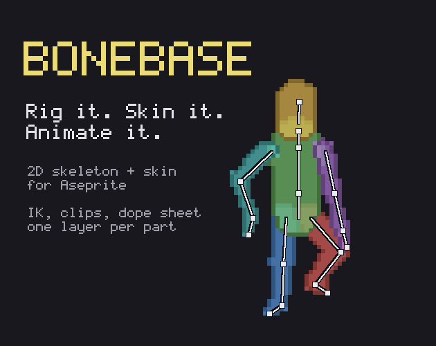
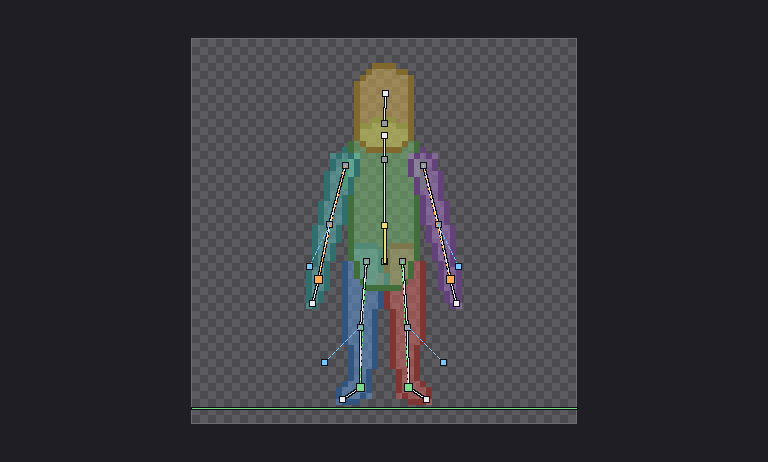
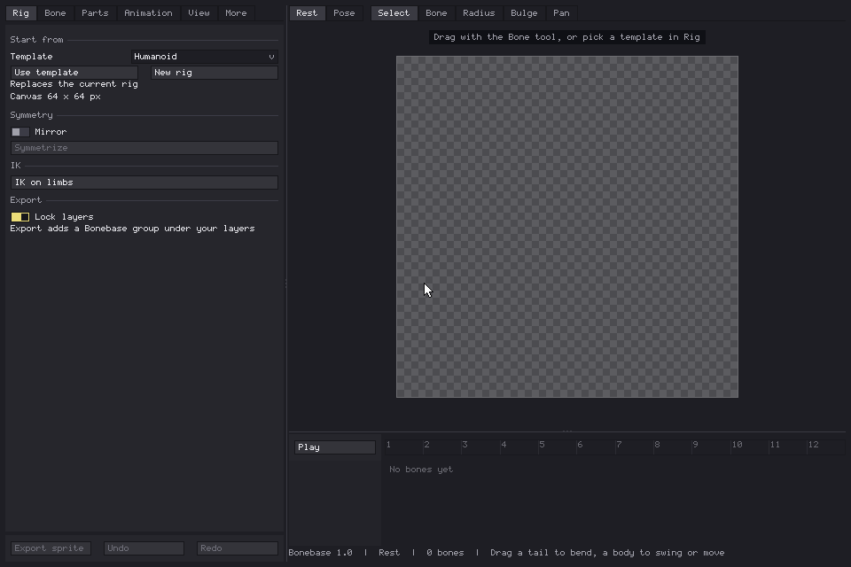
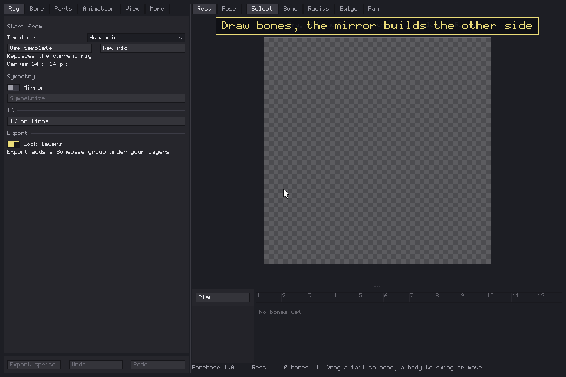
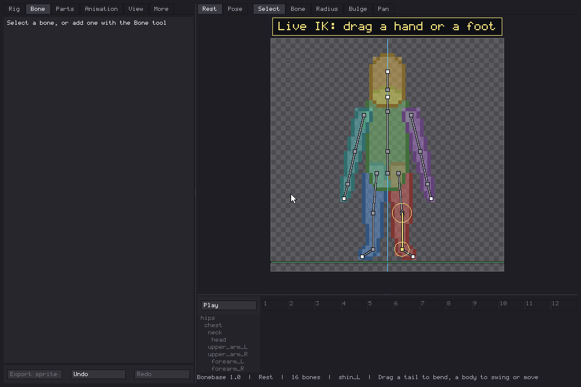
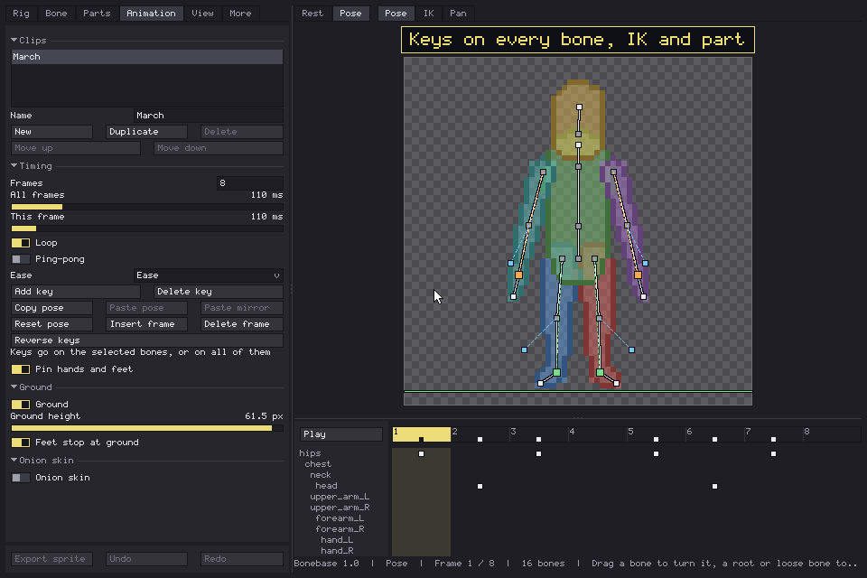
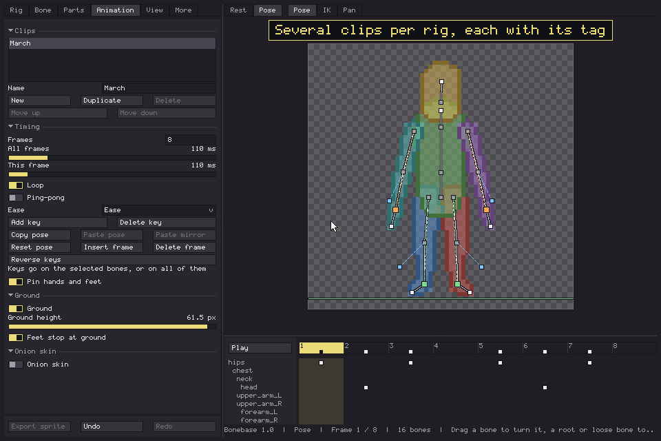
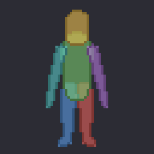
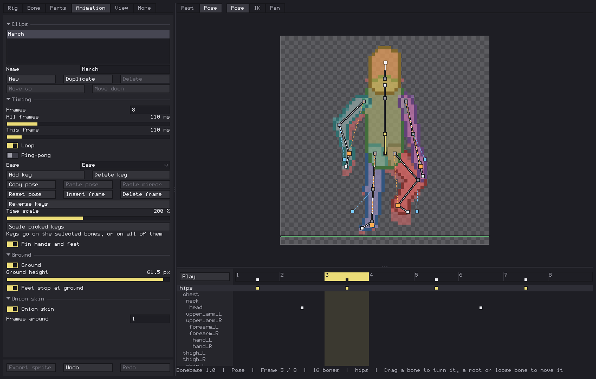

Bonebase is an extension for Aseprite. You build a 2D skeleton, cover it with a skin you shape by hand, animate it with live IK, and export it to your sprite as one layer per part. Then you draw your character on top, frame by frame, over a body that already moves right.

Rig it

- Start from a template (Humanoid, Chibi, Quadruped, Winged, Serpent) or draw bones from scratch.
- Mirror mode builds the left side while you work on the right one. Symmetrize pairs a rig you made by hand.
- Bones can hang connected or loose: a tail, a cape, a floating head.
Skin it

- The skin wraps the bones like a modelling envelope. Set the radius at each joint, and push bulges out on either side of a bone for a belly, a calf or a muscle.
- Bones belong to parts (arm, leg, torso...). Each part becomes one layer, with its own colour and a smooth blend where its bones meet.
- Pixel-perfect outline, thick outline, or none.
Animate it

- Pose mode with auto-key: drag a bone and the key is written on the current frame.
- Live two-bone IK on arms and legs. Drag the hand or foot dummy, pick the elbow or knee side with its pole. Feet stay planted when the hips move, between keys too. Stretch is optional and capped.
- A ground line that feet stop at.
- Channels for rotation, offset and length (squash and stretch), and per part draw order and visibility.
- Eases: Linear, Ease, Ease in, Ease out, Back, Bounce, Step.

- A dope sheet with a row per bone, IK controller and part. Pick keys, drag them, scale their timing, copy and paste them.
- Copy a pose and paste it mirrored: a left step becomes a right step.

- Several clips per rig (idle, walk, attack...), each with its own frames and timing.
- Per-frame holds, ping-pong, reverse keys, onion skin.
Draw over it

- Export sprite adds a
Bonebasegroup at the bottom of your layers: one locked layer per part, one frame per animation frame, a tag per clip. - Re-export any time. Only Bonebase's own layers are rebuilt; your drawing is never touched.
- The rig is saved inside the sprite. Open Bonebase on it again and everything comes back.

Details
- One window inside Aseprite, with undo for every change and a shortcut list (press
?). - Aseprite 1.3 or newer, RGB sprites. Windows, macOS and Linux.
- Per-frame draw order uses Aseprite's cel z-index (1.3 and newer).
Install
- Download
Bonebase-1.0.0.aseprite-extension. - Double-click it, or in Aseprite: Edit > Preferences > Extensions > Add Extension.
- Open it from File > Scripts > Bonebase.
License
One purchase is for one person, on every computer they use.
- Use it in any project: personal, commercial, client work, games and assets you sell.
- What you draw and export with it is yours. No attribution required.
- Every update in the 1.x line is included.
- Do not share, resell or redistribute the extension. A studio buys one per artist.
More Aseprite extensions
- FastFX Full: multi-emitter particle FX, live preview and bake.
- VeSprite: vector drawing for pixel art inside Aseprite.
- Spaghetti: node-based textures for Aseprite.
- GhostFrames: RIFE frame interpolation for inbetweens.